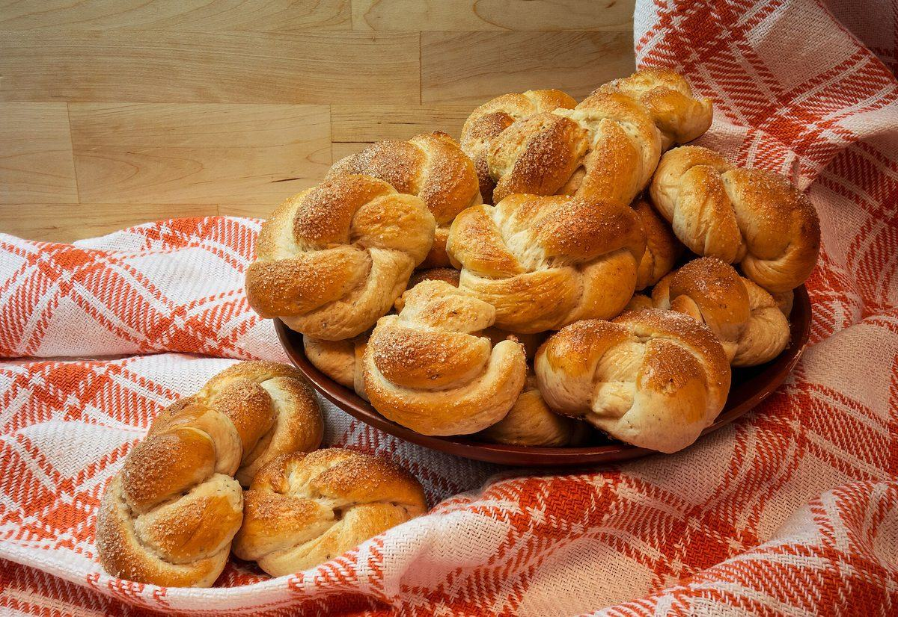

制作側の連想
吸盤フックの部位を、配置図にしてみる
吸盤フック(レバー式)の部位を図にしたもので、制作側の連想です。お店の理念・由来とは無関係で、実際の製品の仕様を示すものでもありません。 六つの部位に番号をふり、上の図と並べています。
凡例
六つの部位
- 1カップ(吸盤ゴム)壁に押しつけて空気を押し出す、おわん形のやわらかいゴム。
- 2密着リング(ふち)カップの外周にある縁で、壁にぴたりと当たる部分。
- 3ベースプレート(台座)カップの中央を裏から支える、硬い円盤。
- 4レバー倒すとカップの中央が引かれて、壁に吸いつく。
- 5ステム(軸)カップの中央から出る太い軸で、レバーとフックをつなぐ。
- 6フック(J字の腕)物を掛けるための腕。先が上を向いている。
写真(イメージ)
写真(イメージ)



写真はイメージです。お店のものではありません。
ご案内
お店のこと(確認できたものだけ)
| 所在地 | 〒371-0056 群馬県前橋市青柳町１３３−７ |
|---|---|
| 電話 | 準備中 |
| 営業時間 | 準備中 |
| 定休日 | 準備中 |
| ご予約 | 準備中 |
| 駐車場 | 準備中 |
| SNS | Instagram @kitsunebakery |